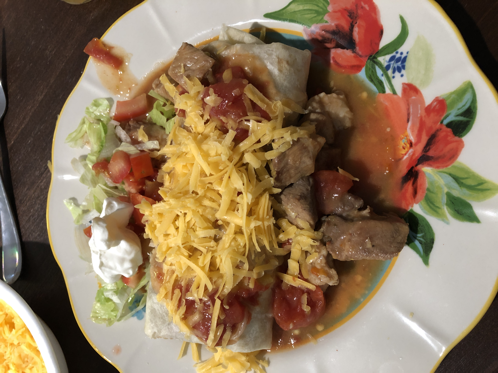

Green Chili Smothered Burrito

Smothered Burrito
Homemade green chili is wonderful over a beef and bean burrito. The warm, smokey green chili
adds a depth to a simple burrito. Add shredded lettuce, tomatoes, and sour cream and you have
a crowd pleaser.
Ingredients
- 1 batch Green Chili
- 4 burrito sized tortillas- fresh or store bought
- 1lb ground beef
- 1tsp salt
- Pepper to taste
- 2tsp cumin
- 2tsp garlic powder
- 2tsp onion powder
- 2tsp chili powder
- 1/2 cup water
- 2 cans pinto beans
- 1/2 cup water
- 3tbs butter
- 1 head iceburg lettuce- shredded
- 1 tomato- chopped
- 2 cups shredded cheddar cheese or 1 cuo cheddar and 1 cup monterey jack
- sour cream, hot sauce, and/or salsa for garnish
Steps
- Brown ground beef at medium heat. Add salt, pepper, cumin, garlic powder, onion powder, and chili powder.
Add 1/2 cup water, cover and simmer at low/medium heat until the water has evaporated.
Taste your meat and add any additional spices to your liking.
- Drain and rinse the pinto beans. Place in a small sauce pan and heat over medium heat. Add 1/2 cup
water and 3tbs butter. While stirring smash some of the beans with the back of the spoon. Creating a partial refried
bean consistency. Add salt and pepper to your liking.
- While the ground beef and beans are cooking, chop the lettuce and tomato. Set aside.
- If using store bought tortillas, wrap in damp paper towel and microwave for 10 seconds.
- Set a warm tortilla on a plate- add a couple of large spoonfulls of the beans to the center. Top with a large scoop
of ground beef and a handful of cheddar cheese. To wrap the burrito, fold in two sides then roll from the open end to
ensure the ends are closed. Repeat with the rest of the tortillas, placing each one on a plate.
- Smother finished burritos with 2-3 ladels of warm green chili and top with lettuce, tomatoes, shredded cheese, and sour cream.
Back to main recipe page